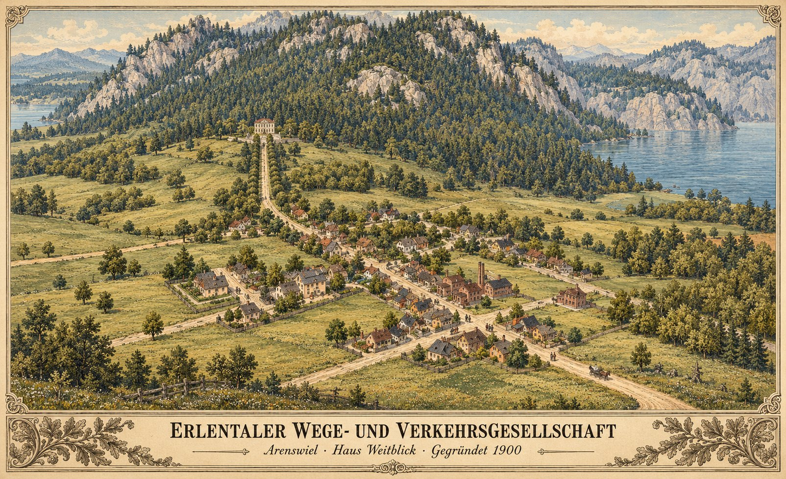

Kapitel I Die Gründung
1900 · Messungen vom 1. Januar bis 2. Februar 1900
Kapitel I auf der 3D-Karte · Bilder vom 2. September 1900, dem ersten vollständigen Kartenexport


Zeitachse
- Erste Messung: Selters hat 167 Einwohner, 0 Linien
- Selters heißt Arenswiel. Erste Linien: Dampfer zur Fischzucht, Fuhrwerke in den Ort
- Zwei Postkutschenlinien durch Arenswiel; erste Tilgung
- Arenswiel sinkt von 167 auf 140 Einwohner
- Die Fischzucht heißt Seegut Tiefenborn
- Arenswiel bei 143 Einwohnern, Konto 949.810
Linien
- Seegut Tiefenborn
- Fisch und Fahrgäste · Dampfer „Sydfart“
- Arenswiel Hafen · Arenswiel Station
- Fisch · 11 Pferdefuhrwerke
- Arenswiel Station Transfer, Ortsmitte
- Arenswiel · 2 Postkutschenlinien in Gegenrichtung, je 2 Kutschen, 4 Halte
Linie laut Messung
Belegt
Am 1. Januar 1900 zählt Selters 167 Einwohner. In der nächsten Messung, am 3. Januar, heißt der Ort Arenswiel; der Spieler hat ihn umbenannt. Die Gesellschaft hat bis dahin einen Kredit über 8 Millionen aufgenommen, ihr Konto steht bei 3,65 Millionen. Zwei Linien fahren: der Dampfer „Sydfart“ zwischen Arenswiel Hafen und der Fischzucht bei Mettmann, für Fahrgäste und Fisch, und elf Pferdefuhrwerke vom Hafen in die Ortsmitte.
Am 13. Januar kommen zwei Postkutschenlinien dazu. Jede fährt mit zwei Postkutschen über dieselben vier Halte in Arenswiel, die zweite in Gegenrichtung. Das Konto sinkt dabei von 3,47 auf 1,41 Millionen. Seit dem 22. Januar heißt die Fischzucht Seegut Tiefenborn.
Am 2. Februar fahren 16 Fahrzeuge auf vier Linien. Das Konto steht bei 949.810, der Kredit nach drei Tilgungen von je 111.111 bei 7,67 Millionen. Die Bilanzen des laufenden Wirtschaftsjahres liegen bei allen vier Linien im Minus, zusammen bei 114.699; die Fuhrwerke tragen davon 70.135. Arenswiel hat 143 Einwohner und verlangt Fisch und Ziegel. Für beide Waren steht die Versorgung bei 0.
Spielmonitor, Messungen vom 1.1. bis 2.2.1900, aufgenommen am 27.10.2026 zwischen 05:37 und 06:06 Uhr Q4. Name und Sitz der Gesellschaft: Angabe des Spielers Q5.
Abgeleitet
Die Gesellschaft fängt dort an, wo ihr Sitz steht: Alle vier Linien beginnen und enden in Arenswiel. Der Fisch nimmt einen geteilten Weg. Vom Seegut bis zum Hafen sind es gut 600 Meter Luftlinie über das Wasser, vom Hafen bis in die Ortsmitte knapp anderthalb Kilometer mit den Fuhrwerken. Bis zum 2. Februar wartet Arenswiel noch auf den ersten Fisch.
Am Tag nach dem Bau der Postkutschenlinien sinkt Arenswiel von 167 auf 140 Einwohner. Danach pendelt die Zahl zwischen 135 und 145. Ob Häuser den neuen Halten und Straßen weichen mussten, bleibt offen.
Literarische Szene
Vom Spieler beauftragte Gründungsgeschichte; Beratungen, Beteiligte und Einzelheiten des Geschäftsalltags sind erzählerische Ausgestaltung, keine Messdaten.
Ein Anfang in ArenswielDie Gründung der Erlentaler Wege- und Verkehrsgesellschaft, 1900
Als die Erlentaler Wege- und Verkehrsgesellschaft im Jahr 1900 gegründet wurde, zählte Arenswiel gerade einmal 167 Einwohner. Unterhalb der bewaldeten Berghänge lagen Wohnhäuser, Werkstätten und einige rauchende Schornsteine. Auf den Wiesen zum See hin war noch reichlich Platz. Wer hier lebte, kannte seine Nachbarn – und wusste, wie lange ein Fuhrwerk bis zum nächsten größeren Markt brauchte.
An Arbeit mangelte es in Erlental nicht. Doch zwischen einer bestellten Ware und ihrer Ankunft lagen schlechte Wege, umständliche Absprachen und mitunter Tage des Wartens. Mancher Handwerker hätte mehr verkaufen können, wenn er seine Erzeugnisse verlässlich zu den Kunden gebracht hätte. Mancher Reisende blieb zu Hause, weil Hin- und Rückfahrt einen ganzen Arbeitstag verschlangen.
Aus diesen alltäglichen Schwierigkeiten entstand der Gedanke einer gemeinsamen Verkehrsgesellschaft.
Die ersten Beratungen waren wenig feierlich. Kaufleute, Fuhrleute und Gewerbetreibende legten ihre Rechnungen nebeneinander, verglichen Lieferzeiten und stritten darüber, welche Verbindung zuerst eingerichtet werden sollte. Jeder hatte einen guten Grund, den eigenen Weg für den dringendsten zu halten. Einig war man sich schließlich darin, dass einzelne Fahrten allein das Problem nicht lösen würden. Erlental brauchte regelmäßige Verbindungen, auf die sich Menschen und Betriebe verlassen konnten.
Als Sitz wählte die Gesellschaft ein helles Haus oberhalb von Arenswiel. Eine lange, von Bäumen gesäumte Zufahrt führte aus dem Ort hinauf. Vom Gebäude aus blickte man über Dächer und Wiesen; dahinter lag der See.
Haus Weitblick wurde sein Name.
Anfangs standen dort mehr leere Schränke als gefüllte Aktenregale. Im Arbeitszimmer lagen eine Karte Erlentals, ein Kassenbuch und die ersten Entwürfe für Fahrpläne. Die eingezeichneten Linien waren vorerst Absichten. Jede musste vermessen, berechnet und bezahlt werden.
Auch im Dorf begegnete man der Gründung mit gemischten Gefühlen. Der Wirt hoffte auf Reisende. Die Werkstätten hofften auf Aufträge. Ein alter Fuhrmann wollte wissen, ob die neue Gesellschaft ihn künftig beschäftigen oder verdrängen würde. Eine Antwort darauf ließ sich nicht mit einer Festrede geben.
Die Direktion musste sich ihr Vertrauen erst verdienen.
So begann die Geschichte der Erlentaler Wege- und Verkehrsgesellschaft mit einem kleinen Ort, einem Haus am Waldrand und einer Aufgabe, deren Größe erst allmählich sichtbar wurde. Noch gab es keinen Bahnhof, an dem Menschen auf den ersten Zug warteten. Noch führte der Weg aus Arenswiel als staubige Straße zwischen den Wiesen hindurch.
Doch oben im Haus Weitblick brannte an diesem Abend länger Licht.